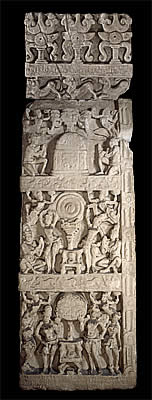

Dome (lower)The main part of the Amaravati Stupa was a solid great dome which most likely stood about 18 metres high. The dome was made of pale green limestone which was probably painted with bright colours.A small box made of stone, pottery or metal was usually placed within the dome of a stupa. This box contained the ashes of the Buddha or an important Buddhist figure.  The lower part of the dome was covered with large stone reliefs.This section of sculpture shows different scenes from the Buddha's life. Click on the different scenes to find out more |